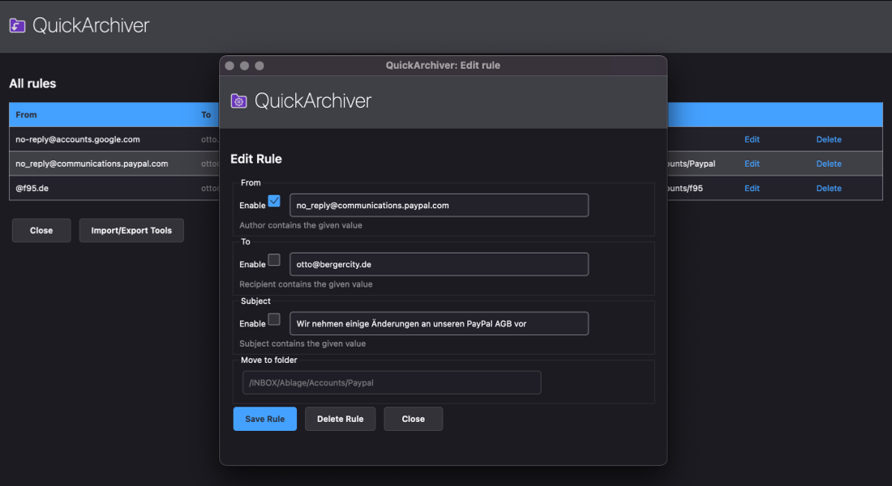

What is QuickArchiver?
QuickArchiver helps you to keep your inbox clean: Instead of first searching for the right folder for each email and then dragging and dropping the email, all it takes now is a single click (or key combination).
How does QuickArchiver work?
QuickArchiver uses its own rules to remember the appropriate folder for an email. Currently the rules can consist of sender, recipient or subject.
Create (default) rule
The first time you move an email (that does not yet have a matching rule) to a folder, QuickArchiver automatically creates a rule based on the sender of the email.
Archive emails (move)
If there are more emails with the same sender, QuickArchiver offers to move them to the appropriate folder with just one click.
Context menu
Right-click on the QuickArchiver button to open the context menu.
Edit rules
Using the menu item "Show all rules" all rules can be listed and also edited.
FAQ
How can I archive all emails of a certain domain into one folder?
The default rule refers to the entire sender address. If you want to archive all emails of a certain domain, e.g. @amazon.com into one folder, edit the rule and remove the corresponding characters before the @.
Can I archive multiple emails at the same time?
It is possible! With the shortcut ALT+A QuickArchiver moves all selected emails into the respective folders.
Development
QuickArchiver is a open source software project by Otto Berger (quickarchiver@bergercity.de). Supported by www.bergerdata.com.
GitHub Projekt: https://github.com/otto802/quickarchiver
Many thanks to
- developer.thunderbird.net
- thunderbird.topicbox.com/groups/addons
- John Bieling, all his efforts on examples!
- Philippe Lieser, translation logic
- And many, many others working on the WebExtension API!
Release Notes
Version 2.0
The new version of Thunderbird 115.* (Supernova) requires deep changes to QuickArchiver. The old QuickArchiver 0.2 branch will therefore no longer work and thus will not be developed further. The last Thunderbird updates had already announced it: only with effort and unattractive compromises QuickArchiver could continue to work.
The good news: there is a new version and you have just installed it!
New features:
- Complete new development based on the current WebExtension API from Mozilla. Future updates are easier with this!
- Rules are stored in the WebExtension storage
- Rules are potentially available across devices (on the roadmap)
- New UI: Toolbar button, menu and keyboard shortcuts
- New UI: improved rule editor and list of all rules
- Rule creation happens as usual automatically when moving emails
Some disadvantages, which can not be prevented according to the current state:
- All rules have to be created again. An update of the old rule database to the new structure would be very time-consuming.
- There is no QuickArchiver column in the list anymore. This is no longer possible with the current Thunderbird version, but should probably be possible again in future versions for WebExtensions. It is also not yet clear how the previous operation can be implemented with the new "card view". The operation is now done via toolbar buttons and keyboard shortcuts.